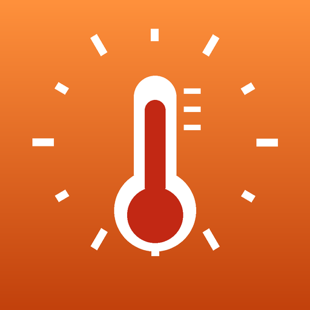

ClimatStress
Ayuda a la decisión frente al estrés térmico en obra
Qué hace
- Heat Index o WBGT con las ecuaciones de la literatura (NWS Rothfusz; ISO 7243).
- Ciclos trabajo/descanso por bandera (verde a negra), como máximos.
- Alertas en Apple Watch: háptica y sonido 5 minutos antes del descanso, luz verde para reanudar.
- Estimación de la temperatura central a partir de la FC (modelo, no una medición).
- Informe HSE diario en CSV y PDF. Inglés, francés, español, portugués.
- WBGT medido, directo o estimado con el modelo de Liljegren et al. (2008); banderas WBGT según valores ACGIH 2006. Umbrales editables. Todas las funciones gratis 3 días; después las calculadoras de Heat Index y WBGT siguen gratis; suscripciones (mensual, trimestral, semestral, anual) o compra de por vida para el resto.
- Chat de equipo (opcional): un grupo de texto por obra mediante iCloud, 48 horas de historial, invitación por enlace o código QR. No es para emergencias.
Requiere iPhone con iOS 18 o posterior y Apple Watch con watchOS 11 o posterior.
ClimatStress es una ayuda de tipo centinela: avisa y ayuda a reflexionar sobre el calor, nada más. No es un producto sanitario y no diagnostica, trata ni previene ninguna afección. No sustituye el consejo médico, las leyes y reglamentos vigentes, las recomendaciones del servicio HSE (Higiene, Seguridad, Medio Ambiente) de su empleador o de la medicina del trabajo, ni su propio criterio. Si se siente mal, detenga el trabajo y llame a los servicios de emergencia, sea lo que sea que muestre la aplicación.
Aviso legal — restricción territorial (Estados Unidos)
Las versiones 1.1.0 / 2.1.0 de ClimatStress (ficha App Store: ClimatariumStress) están destinadas EXCLUSIVAMENTE a su distribución y uso fuera de Estados Unidos. En ningún caso pueden distribuirse, ofrecerse ni ponerse a disposición en el territorio de Estados Unidos: el algoritmo de estimación de la temperatura central que contienen está sujeto a una patente estadounidense (patente US 10,702,165 B2, concedida el 7 de julio de 2020), exigible en Estados Unidos. Para Estados Unidos existen versiones distintas (1.51.0 / 2.51.0) que no contienen este algoritmo. Esta información no constituye asesoramiento jurídico.
Las versiones 1.1.0 / 2.1.0 de ClimatStress (ficha App Store: ClimatariumStress) están destinadas EXCLUSIVAMENTE a su distribución y uso fuera de Estados Unidos. En ningún caso pueden distribuirse, ofrecerse ni ponerse a disposición en el territorio de Estados Unidos: el algoritmo de estimación de la temperatura central que contienen está sujeto a una patente estadounidense (patente US 10,702,165 B2, concedida el 7 de julio de 2020), exigible en Estados Unidos. Para Estados Unidos existen versiones distintas (1.51.0 / 2.51.0) que no contienen este algoritmo. Esta información no constituye asesoramiento jurídico.
Fuentes
- NWS, The Heat Index Equation (Rothfusz 1990). wpc.ncep.noaa.gov/html/heatindex_equation.shtml
- ISO 7243:2017, Ergonomics of the thermal environment — Assessment of heat stress using the WBGT index.
- Liljegren et al., J Occup Environ Hyg 2008;5(10):645–655.
- Buller et al., Physiol Meas 2013;34(7):781–798.
- Tanaka et al., J Am Coll Cardiol 2001;37(1):153–156.
- NIOSH 2016-106: Jacklitsch B, Williams WJ, Musolin K, Coca A, Kim J-H, Turner N. Criteria for a Recommended Standard: Occupational Exposure to Heat and Hot Environments. Cincinnati, OH: DHHS (NIOSH) Publication 2016-106.
- OSHA, Heat Hazard Recognition and OSHA Technical Manual III:4 (osha.gov), accessed 2026-11-03.
- ISO 7243:2017 clauses 9.2–9.3 and ACGIH TLV Heat Stress and Strain (Table 2 notes, as reproduced by Cal/OSHA, dir.ca.gov/dosh/doshreg/Heat-illness-prevention-indoors/heat-tlv.pdf, accessed 2026-11-04): hourly time-weighted WBGT and metabolic rate when work and rest environments differ.
- Kasten F, Czeplak G. Solar Energy 1980;24:177–189; Flerchinger et al., Water Resour Res 2009 (doi:10.1029/2008WR007394); Haurwitz B. J Meteorol 1945;2:154–166 (pvlib/SAND2012-2389); Collares-Pereira M, Rabl A. Solar Energy 1979;22:155–164.
- Ainsworth BE et al. 2011 Compendium of physical activities. Med Sci Sports Exerc 43(8):1575–1581; pacompendium.com.
- Solar climatology: The data was obtained from National Aeronautics and Space Administration (NASA) Langley Research Center's Prediction Of Worldwide Energy Resources (POWER) project funded through the NASA Earth Science Division. POWER Project, Climatology, data obtained on 2026/10/31. power.larc.nasa.gov
- ACGIH, TLV for Heat Stress and Strain (2006), as reproduced in T. E. Bernard, Screening Criteria for Heat Stress, V2.2.
- This product includes software produced by UChicago Argonne, LLC under Contract No. DE-AC02-06CH11357 with the Department of Energy. (Liljegren WBGT model, version 1.1, ported to Swift.)